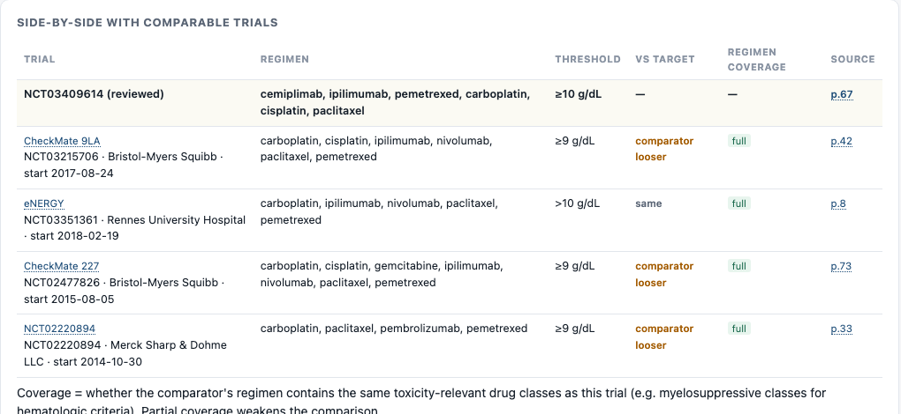
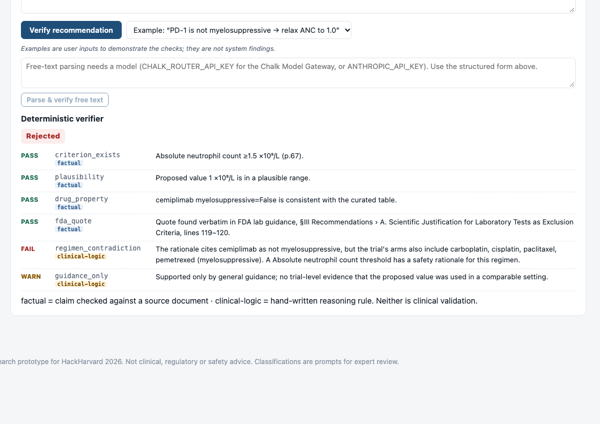
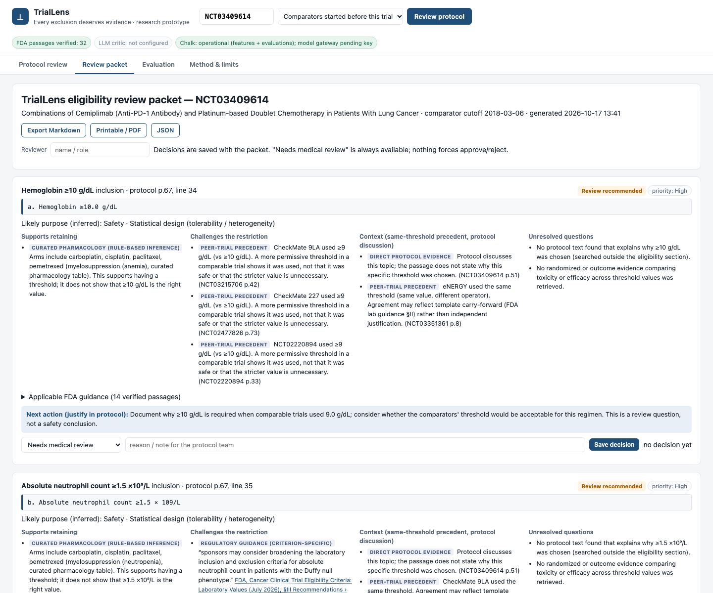

An evidence-grounded, challengeable reviewer for clinical-trial eligibility decisions: built on real protocols, verified sources and a measured evaluation.
FDA Enrichment Strategies (2019); Regeneron mentor insights §1.4–1.5
EMPOWER-Lung 3 (Regeneron, NCT03409614): the registry text never mentions the neutrophil threshold. The lab criteria are on page 67 of a 170-page PDF. Comparable trials' thresholds sit in other sponsors' PDFs.
Checked live by a Chalk feature resolver: registry_mentions_anc = false
Users: clinical scientists, protocol authors, medical reviewers, cross-functional protocol-review teams. TrialLens prepares the evidence; the team decides.
Output is a defensible question with evidence, not an automated answer.

Challenge (typed example): "Cemiplimab is a PD-1 inhibitor and not myelosuppressive, so lower the ANC floor to 1.0."
We label which checks are factual and which are hand-written rules. Neither is clinical validation.


| What | Result | Note |
|---|---|---|
| Extraction, 19 real protocols | 122/128 criteria · 97.6% precision | Unseen set 1 first run 15/21 (→21/21 after fix); unseen set 2 29/33, single run |
| Planted stricter thresholds (24, Regeneron method) | Never "supports retaining" 24/24 · escalated 16–22/24 | Depends on precedent cutoff; first run found 3 bugs, documented |
| Loosened thresholds falsely flagged | 0/10 | Synthetic edits of authentic protocols |
| FDA quotes / protocol source lines | 32/32 · 157/157 | Verbatim, page-anchored |
| Verifier, developer-designed faults | 24/24 rejected · 0/10 valid rejected | Same author wrote faults and verifier. Also run on Chalk. |
Trial feature set resolved live from ClinicalTrials.gov inside Chalk. The dashboard queries it per trial: is the threshold even in the registry? Deployed; online queries succeed.Evaluation cmvco3m0n01dw01y520oc80sq · environment trllf247b678
Every exclusion deserves evidence.